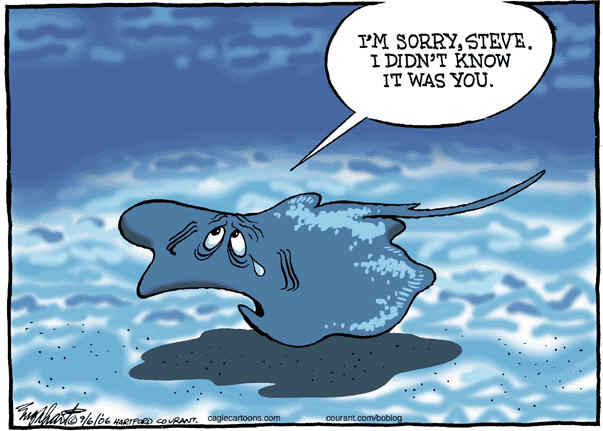

Tired of typing in every single airport identifier code before you brief? Enjoy these links
I made this website four years ago -- thrilled people still use it, and big shoutout to Sarah for updating it.
For my Navy kids, feel free to reach out to Gordon.s.kiesling.mil@us.navy.mil with P-8 questions.
DD-175-1 Wx Brief
METOC Server
NOTAMS
With Houston Center (hella long) Without Houston Center Jeppesen NOTAMS RAIM Outage PredictionBASH Report
BASH HomeMETARS and TAF
aviationweather.govGouge
VT-35 Website and Multi-Engine University Tilt Mafia CNATRA Web Sked Sky Vector OPARS BASEOPS.NETThis website not endorsed by the Department of the Navy, CNATRA, or VT-35
If you need to get in touch with the website creator, create a new issue here. Suggestions welcome.
Changelog
18 March 20: Added RAIM, skyvector, KNQI and KNGW to links
25 March 20: Added OPARS and BASEOPS links
21 October 23: Updated links for METARs/TAFs, BASH, and FWB
1 Nov 23: Credit to Sarah!! I'm still alive feel free to push more change requests!!